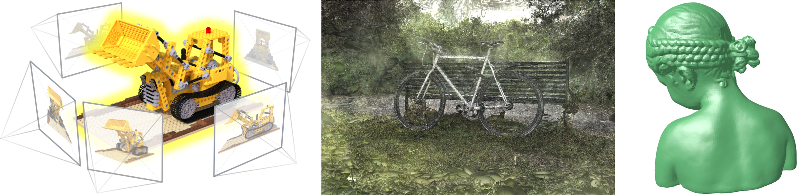

CS479: Machine Learning for 3D Data
Minhyuk Sung, KAIST, Spring 2026
1
Time & Location
Time: Mon/Wed 1:00 p.m. - 2:15 p.m. (KST)
Location: E3-5 Room 210
Description
3D Data are widely used in many applications in computer vision, computer graphics, and robotic, such as autonomous driving, AI-assisted 3D object/scene design, augmented reality, and physical robot interaction. Along with the recent increasing demands on processing and analyzing such 3D data, there has been tremendous progress in developing novel technologies, especially based on deep learning. In this course, we will cover the recent advances in machine learning techniques for 3D data and also discuss the remaining challenges.
Prerequisites
Required
- CS371: Introduction to Deep Learning
Recommended
- CS380: Introduction to Computer Graphics
- CS484: Introduction to Computer Vision
Course Staff
Instructor: Minhyuk Sung (mhsung@kaist.ac.kr)
Course Assistants:
- Mingue Park (kicikicik@kaist.ac.kr)
- Kyeongmin Yeo (aaaaa@kaist.ac.kr)
- Daehyeon Choi (daehyeonchoi@kaist.ac.kr)
- Jisung Hwang (4011hjs@kaist.ac.kr)
Past Years
- CS479: Machine Learning for 3D Data (Spring 2025)
- CS479: Machine Learning for 3D Data (Fall 2023)
- CS492(A): Machine Learning for 3D Data (Spring 2022)
- CS492(H): Machine Learning for 3D Data (Spring 2021)
Grading
- Programming Assignments: 20%
- 3D Segmentation Competition: 20%
- 3D Rendering Contest: 20%
- Exams: 30%
- In-Class Participation: 10%
AI Coding Assistant Tool Policy
You are allowed (and even encouraged) to utilize AI coding assistant tools, such as ChatGPT, Copilot, Codex, and Code Intelligence, for your programming assignments and projects. Utilizing AI coding assistant tools will not be deemed as plagiarism. However, it is still strictly prohibited to directly copy code from the Internet or from someone else. Doing so will lead to a score of zero and a report to the university.
Important Dates
ALL ASSIGNMENTS ARE DUE 23:59 KST. (Subject to Change)
- Assignment 1 Submission Due: March 31 (Tuesday), 23:59 KST
- Team Sign-Up Due: April 1 (Wednesday), 23:59 KST
- Assignment 2 Submission Due: April 28 (Tuesday), 23:59 KST
- Assignment 3 Submission Due: May 12 (Tuesday), 23:59 KST
- Assignment 4 Submission Due: May 26 (Tuesday), 23:59 KST
- 3D Segmentation Competition Submission Due: May 9 (Saturday), 23:59 KST
- 3D Rendering Contest Submission Due: June 6 (Saturday), 23:59 KST
Schedule
(Subject to Change)
| Week | Mon | Topic | Wed | Topic |
|---|---|---|---|---|
| 1 | Mar 2 | No Class (Substitute Holiday for the Independence Movement Day) |
Mar 4 | Course Introduction |
| 2 | Mar 9 | 3D Representations | Mar 11 | Point Clouds 1 |
| 3 | Mar 16 | Point Clouds 2 | Mar 18 | Assignment 1 Session: PointNet |
| 4 | Mar 23 | Implicit Neural Representations | Mar 25 | Image-to-3D 1: Camera Model |
| 5 | Mar 30 | Image-to-3D 2: Epipolar Geometry |
Apr 1 | Neural Radiance Fields (NeRF) |
| 6 | Apr 6 | Hybrid Representations | Apr 8 | Assignment 2 Session: NeRF |
| 7 | Apr 13 | Gaussian Splatting 1 | Apr 15 | Midterm Summary |
| 8 | Apr 20 | Midterm Exam | Apr 22 | No Class (Midterm Week) |
| 9 | Apr 27 | Gaussian Splatting 2 | Apr 29 | Assignment 3 Session: Gaussian Splatting |
| 10 | May 4 | Representation Conversion 1 | May 6 | No Class (Break) |
| 11 | May 11 | Representation Conversion 2 | May 13 | Assignment 4 Session: Marching Squares |
| 12 | May 18 | Mesh Deformation | May 20 | Guest Lecture 1 |
| 13 | May 26 | No Class (Substitute Holiday for Buddha's Birthday) |
May 27 | Guest Lecture 2 |
| 14 | Jun 1 | 3D Geneneration | Jun 3 | No Class (Local Elections) |
| 15 | Jun 8 | Project Presentations 1 | Jun 10 | Project Presentations 2 |
| 16 | Jun 15 | Final Exam | Jun 17 | No Class (Final Week) |
-
Teaser image credits (from left to right):
Mildenhall et al., NeRF: Representing Scenes as Neural Radiance Fields for View Synthesis, ECCV 2020.
https://huggingface.co/blog/gaussian-splatting
Hwang and Sung, Occupancy-Based Dual Contouring, SIGGRAPH Asia 2024.
↩